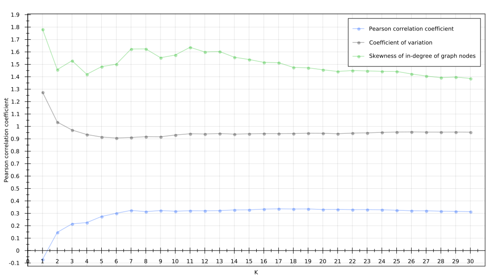

Assortativity of kNN graphs
by Patryk Małek
Problem definition
Whether there exists a correlation between:
k parameter of kNN graphs (nodes' number of outgoing connections)- and its
assortativity coefficient
Where assortativity is a tendency of nodes to connect to similar nodes
(by similar we take into account in-degree of nodes)
Why is research of assortativity important?
We can investigate whether real world datasets/networks tend to have nodes more keen to connect to nodes alike them or rather connect to random nodes.
Examples of (dis)assortative networks:
Social networks, friendship - assortative- we connect with people that are alike us in terms of age, nationality, income, etc
Internet - (slightly) disassortative- Internet nodes can connect to any other node
Research, solution implementation
Created solution calculating assortativity coefficient vs k
parameter of kNN graph
Example dataset
.csv file, with 4 instances, each with 6 attributes
-10.29700756;-11.66678905;11.56066895;-2.08131576;4.04465580;4.08681488
2.13813472;3.50308204;-0.06407356;0.98330212;2.00134420;1.47868252
-2.19252634;0.83010828;0.45290488;1.08559155;1.96038878;-0.87715614
-0.01794434;0.44264925;0.62042207;-1.13598573;0.08879852;0.18696856Assortativity coefficient calculation
public double compute() {
int numLinks = g.getEdgeCount();
double[] degSrc = new double[numLinks];
double[] degDst = new double[numLinks];
Collection links = g.getEdges();
Iterator lit = links.iterator();
int i = 0;
while (lit.hasNext()) {
Link l = lit.next();
Pair endPoints = g.getEndpoints(l);
degSrc[i] = g.degree(endPoints.getFirst());
degDst[i] = g.degree(endPoints.getSecond());
i++;
}
PearsonsCorrelation pc = new PearsonsCorrelation();
return pc.correlation(degSrc, degDst);
}
One of results received via implemented solution
Results and conclusions:
- k-NN graphs tend to be
dissasortative or show no assortative mixing for smallk (k = 1) - k-NN graphs tend to be
assortative for largek - Assortativity for large
k occurs regardless of hubness phenomena
Follow-up work
-
Take into account
different distance metrics , e.g. manhattan -
Use
different measures for Pearson's Correlation Coefficient, e.g. person's age
Any questions?
Code available at
github.com/pmalek/knngraphs
Built with bespoke.js